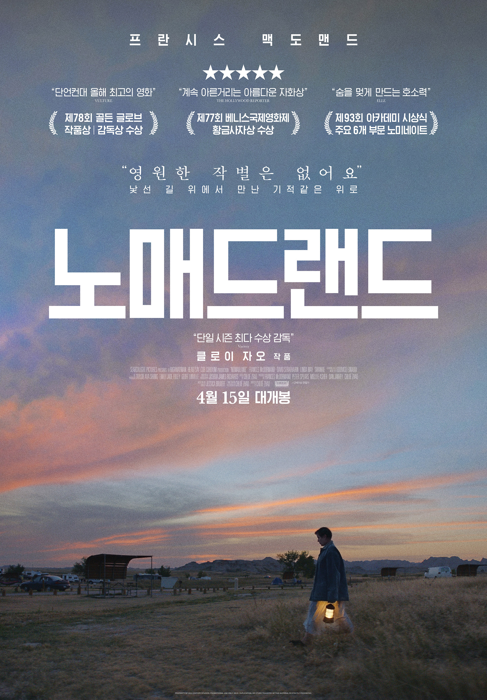

노매드랜드
주요정보
전 세계가 동행한 가슴 벅찬 여정, 길이 계속되는 한 우리의 삶도 계속된다. 모든 것이 무너진 후에야 비로소 열리는 새로운 길 그리고 희망 경제적 붕괴로 도시 전체가 무너진 후 홀로 남겨진 ‘펀’.(프란시스 맥도맨드) 추억이 깃든 도시를 떠나 작은 밴과 함께 한 번도 가보지 않은 낯선 길 위의 세상으로 떠난다. 그 곳에서 ‘펀’은 각자의 사연을 가진 노매드들을 만나게 되고, 광활한 자연과 길 위에서의 삶을 스스로 선택한 그들과 만나고 헤어지며 다시 살아가기 위한 여정을 시작하는데…